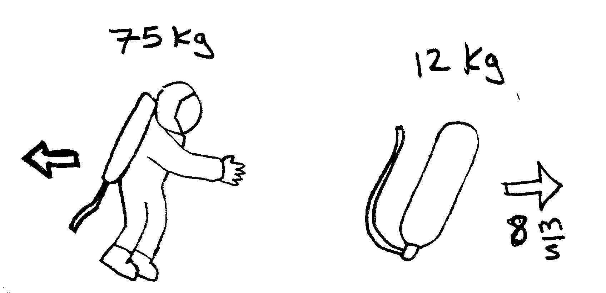
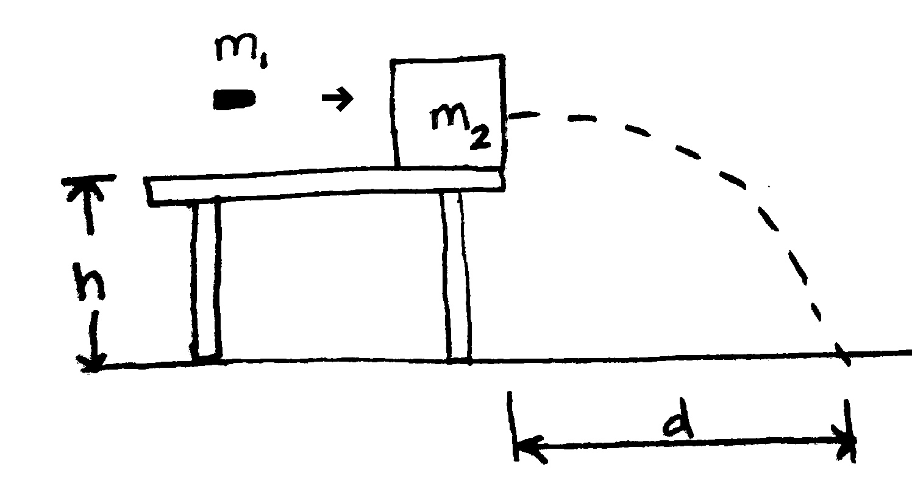
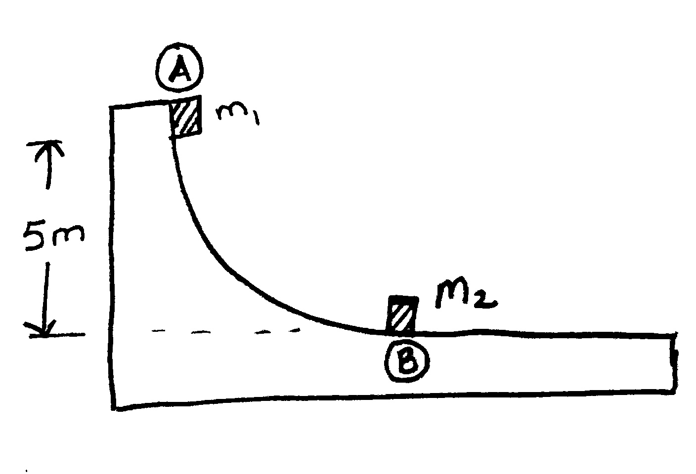
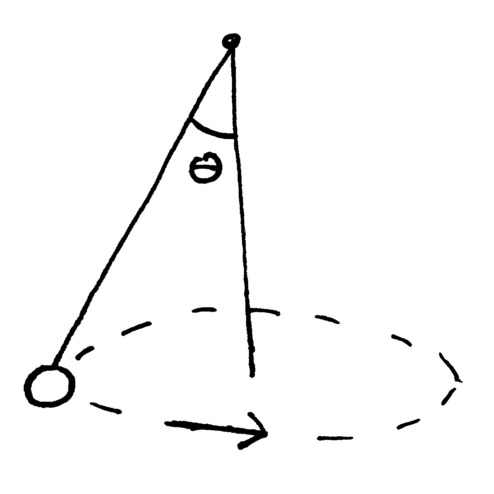
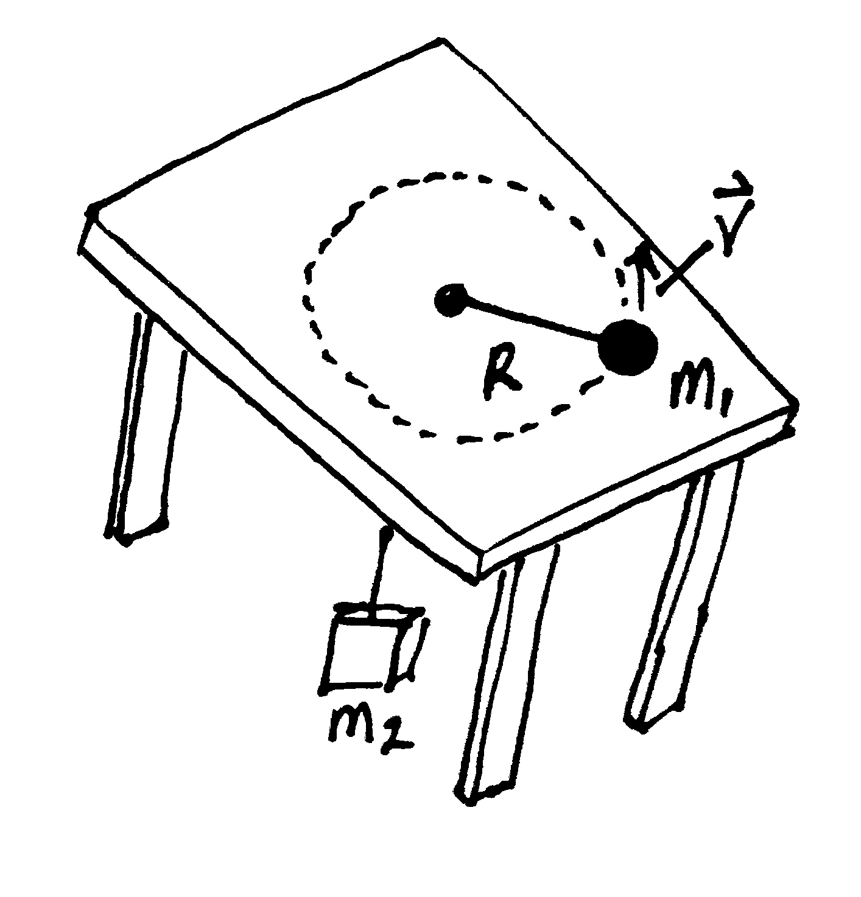
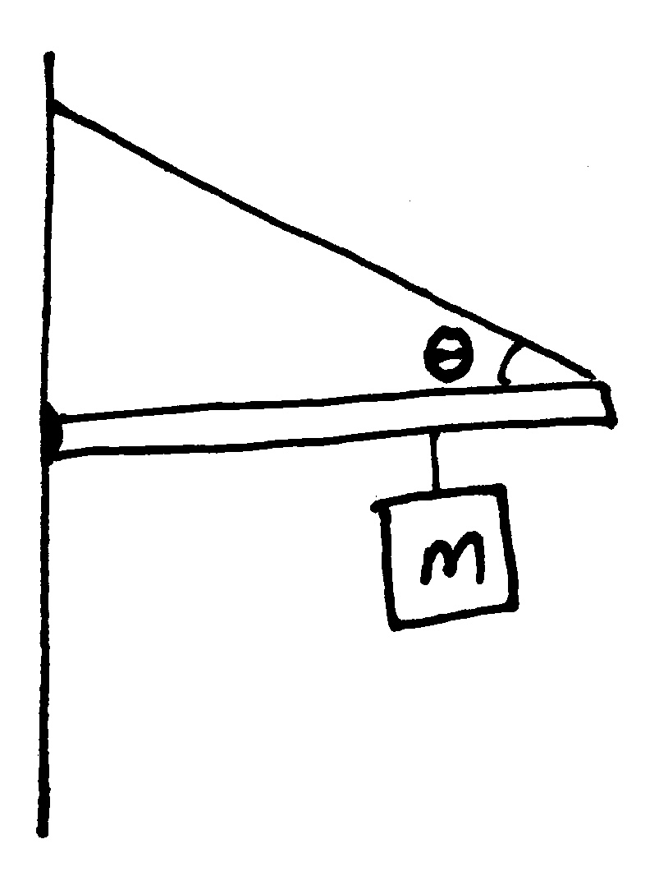
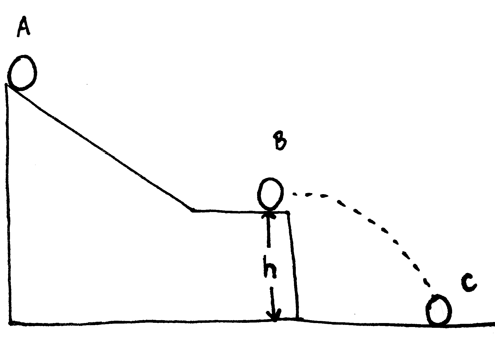

Homework03
Problem 3.1
An astronaut in her space suit has a total mass of \(87.0~kg\), including suit and oxygen tank. Her tether line loses its attachment to her spacecraft while she’s on a spacewalk. Initially at rest with respect to her spacecraft, she throws her \(12.0~kg\) oxygen tank away from her spacecraft with a speed of \(8.00~m/s\) to propel herself back toward it.
- Determine the maximum distance she can be from the craft and still return within 2 minutes (the amount of time the air in the helmet remains breathable).[\(153.6~m\)]
- Explain in terms of Newtons’s laws of motion why this strategy works.

Problem 3.2
A bullet of mas \(m_1 = 8.00~g\) is fired into a block of mass \(m_2 = 250~g\) that is initially at rest at the edge of a table of height \(h=1.00~m\). The bullet remains in the block, and after the impact the block lands \(d=2.00~m\) from the bottom of the table. Determine the initial speed of the bullet.[\(142.7~m/s\)]

Problem 3.3
Consider a frictionless track as shown in the below figure. A block of mass \(m_1 = 5.00~kg\) is released from point A. It makes a head-on elastic collision at point B with a block of mass \(m_2 = 10.0~kg\) that is initially at rest. Calculate the maximum height to which \(m_1\) rises after the collision.[\(0.555~m\)]

Problem 3.4
A billiard ball moving at \(5.00~m/s\) strikes a stationary ball of the same mass. After the collision, the first ball moves at \(4.33~m/s\) at an angle of \(30^\circ\) with respect to the original line of motion.
- Find the velocity (magnitude and direction) of the second ball after the collision[\(v_{x2f}=1.25~m/s\) and \(v_{y2f} = -2.165 m/s\)].
- Was the collision inelastic or elastic?
Problem 3.5
The diameters of the main rotor and tail rotor of a single-engine helicopter are \(7.60~m\) and \(1.02~m\), respectively. The respective rotational speeds are \(450~rev/min\) and \(4,138~rev/min\).
- Calculate the speed of the tips of both rotors. [\(179~m/s\) and \(221~m/s\)]
- Compare these speeds with the speed of sound, \(343~m/s\).
Problem 3.6
A car initially traveling at \(29.0~m/s\) undergoes a constant \(1.75~m/s^2\) acceleration after the breaks are applied. The car’s tires are \(0.330~m\) in radius.
- Solve for the distance the car will travel before coming to rest. [\(240m\)]
- Calculate the number of revolutions one of the car’s tires makes during this time.[\(116~rev\)]
Problem 3.7
A \(0.500~kg\) ball is tied to the end of a \(1.50~m\) string and revolved in a horizontal plane. The ball is revolved so its angle is \(35.0^\circ\). Find the velocity of the ball. [\(2.43~m/s\)]

Problem 3.8
An air puck of mass \(m_1 = 0.25~kg\) is tied to a string and allowed to revolve in a circle of radius \(R=1.0~m\) on a frictionless horizontal table. The other end of the string passes through a hole in the center of the table, and a mass \(m_2 =1.0~kg\) is tied to it, as shown in the figure. The suspended mass remains in equilibrium while the pick on the tabletop revolves.
- What is the tension in the string?[\(9.8~N\)]
- What is the horizontal force acting on the puck?[\(9.8~N\)]
- What is the speed of the puck?[\(6.3~m/s\)]

Problem 3.9
A painter climbs a ladder leaning against a smooth frictionless wall, which makes an angle to the floor of \(53.0^\circ\). At some height the ladder will be on the verge of sliding against the floor. The coefficient of friction between the ladder and the floor is \(\mu=0.450\). The ladder is \(4.00~m\) long and has a mass of \(30.0~kg\).
- Find the maximum distance the 80kg painter can climb the ladder just before it slips. [\(2.53~m\)]
Problem 3.10
A \(5.00~m\) uniform bar with a mass of \(76.0~kg\) is attached to a wall by a pin and held horizontal by a string. The string makes a \(30.0^\circ\) angle with the bar and a mass of \(15.0~kg\) is suspended \(4.00~m\) from the hinge.
- Solve for the tension in the string. [\(981~N\)]
- Solve for the force exerted on the hinge.\newline\

Problem 3.11
Two identical springs side-by-side are each compressed \(40.0~cm\). A hollow cylinder with a mass of \(2.50~kg\) and a radius of \(0.125~m\) is placed in front of the first spring. A solid cylinder with a mass of \(2.50~kg\) and a radius of \(0.125~m\) is placed in front of the second spring. The springs are released and the cylinders are rolled without sliding. The springs have identical spring constants of \(300~N/m\).
- Solve for the final velocity of the hollow cylinder. [\(3.10~m/s\)]
- Solve for the final velocity of the solid cylinder. [\(3.58~m/s\)]
- To release the cylinders with the same velocity solve for the new spring constant of the spring pushing the hollow cylinder. [\(401~N/m\)]
Problem 3.12
A solid ball rolls down an incline at \(40^\circ\) and off a table (\(h = 1.50~m\)). The ball lands \(0.813~m\) from the table edge.
- Solve for the velocity of the ball at the bottom of the incline (point B). [\(1.47~m/s\)]
- Find the height of the incline (at point A) if the ball has a mass of \(1.50~kg\). [\(0.154~m\)]\newline\
